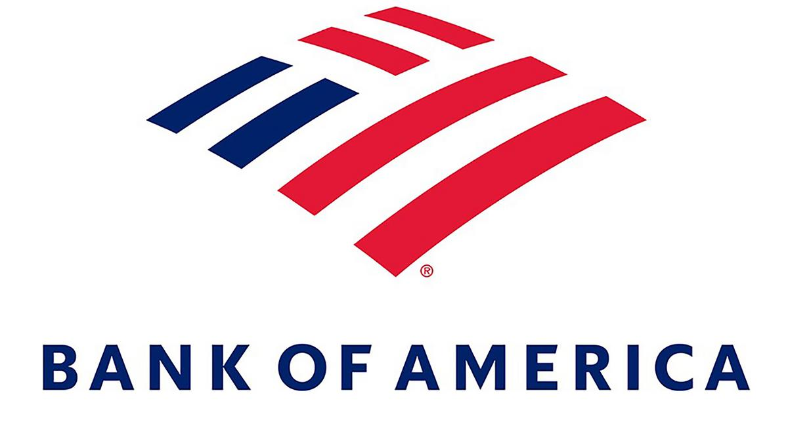

Aiyana's Work Projects
Bank of America Internship
During the last two summers, I interned at Bank of America as a Global Technology Summer Analyst. While at the firm, I worked on data literacy projects that predicted daily cash flow in ATM's across the country within 10% accuracy. I also presented my findings as models at the end of the summer in my final presentation. As a sophomore analyst, I worked on the operational intelligence team and worked on monitoring and analyzing data for the Bank.

PennApps Hack-a-Thon Project
The YouTube video below demonstrates my team's University of Pennsylvania "Hack-a-Thon" (PennApps) project called Tweet to Vote. In this project, we used Natural Language Processing, a pretrained neural network, and over 400,000 election day tweets to predict the outcome of the 2016 election within 30 electoral college votes!